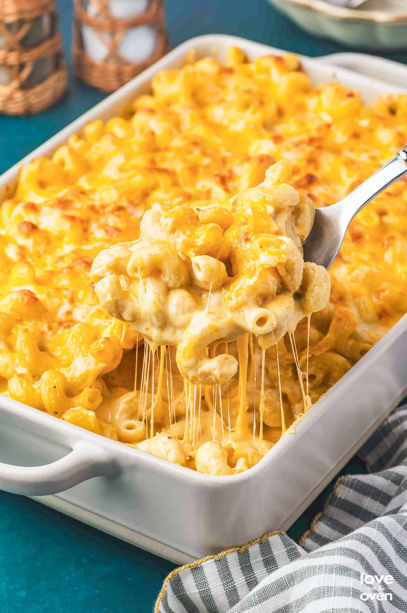

ATL Bussin Mac and Cheese

this is the famous recipe for your bussin mac and cheese.
its probably the best you'll ever have! probably better than your grandmas
Ingredients
this is what you will need typeeee
- 1/2 pound elbow macaroni
- 3 tablespoons butter
- 3 tablespoons all-purpose flour
- 1 tablespoon dry mustard
- 1/2 teaspoon salt
- 1/4 teaspoon black pepper
- 3 cups milk
- 2 cups shredded sharp cheddar cheese
- 1/2 cup grated Parmesan cheese
- 1/2 cup bread crumbs
Instructions
follow these steps to make the best mac and cheese ever :p
- Preheat your oven to 350°F (175°C). Cook the elbow macaroni according to the package instructions until al dente. Drain and set aside.
- In a large saucepan, melt the butter over medium heat. Stir in the flour, dry mustard, salt, and black pepper until well combined. Cook for about 1-2 minutes, stirring constantly, until the mixture is bubbly and golden.
- Gradually whisk in the milk, ensuring there are no lumps. Continue to cook and stir until the sauce thickens, about 5-7 minutes.
- Remove the saucepan from heat and stir in the shredded cheddar cheese and grated Parmesan cheese until melted and smooth.
- Add the cooked macaroni to the cheese sauce and stir until well coated.
- Transfer the mac and cheese mixture to a greased baking dish. Sprinkle the bread crumbs evenly over the top.
- Bake in the preheated oven for 20-25 minutes, or until the top is golden brown and bubbly.
- Remove from oven and let it cool for a few minutes before serving. Enjoy your delicious ATL Bussin Mac and Cheese!
this is the end of the recipe, hope you enjoy it :) follow the gram @itzedrisa